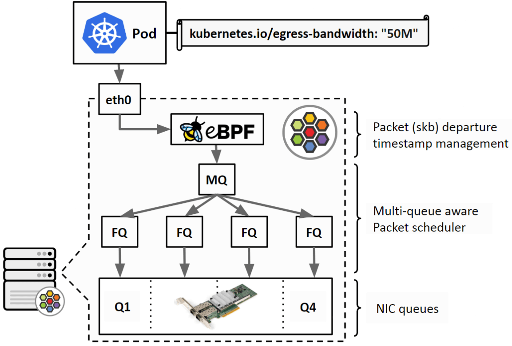
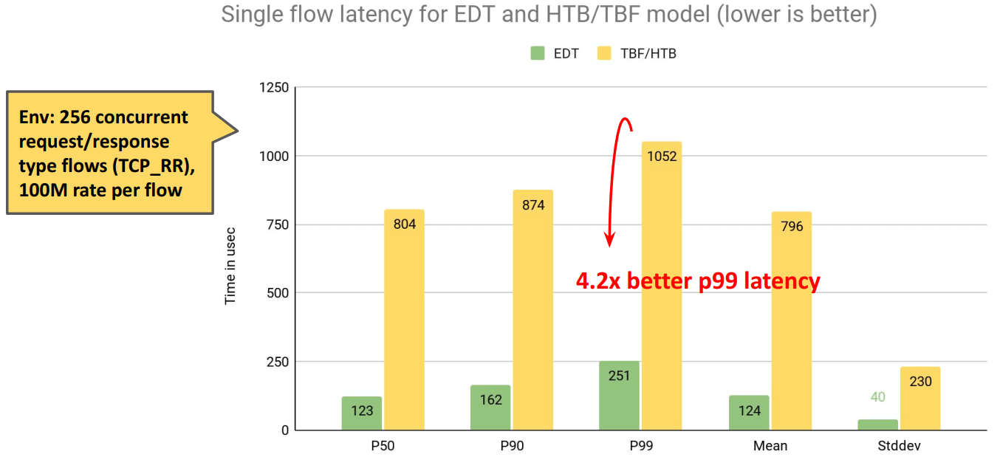
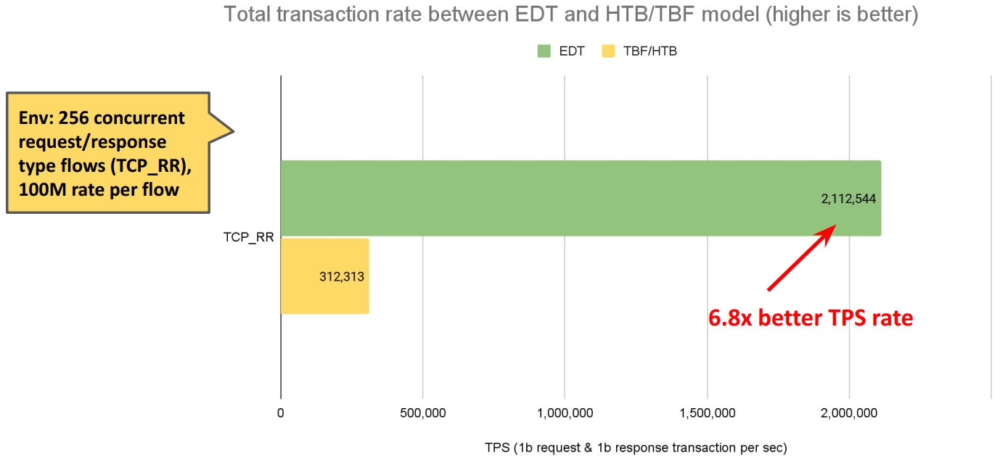

Bandwidth Manager
1. 传统限速方案
通过CNI给容器设置 TBF qdisc，甚至为了支持 ingress shaping 使用 ifb 设备。
存在问题：
- 效率不高，多队列需要竞争锁；
- ifb 占用资源，效果不好；
- 可扩展性差；
2. cilium 限速工作原理
- cilium 在物理设备 egress 方向上挂
to-netdev程序，根据用户定义的限速带宽，为每个包设置一个departure time； - 在物理设备上设置 FQ qdisc，FQ qdisc 会根据这个时间戳对包进行调度。保证不会早于这个时间戳将包发送出去。
$ tc filter show dev eth0 egress
$ tc qdisc show dev eth0

3. 源码
// bpf_lxc.c [from-container]
edt_set_aggregate(ctx, LXC_ID); // 将 endpoint id 记录到数据包中
// bpf_host.c [to-netdev]
{
aggregate.id = edt_get_aggregate(ctx); // 读取 endpoint id
info = map_lookup_elem(&THROTTLE_MAP, &aggregate); // 根据 endpoint id 从 cilium_throttle map 中查询带宽。
// 比如Pod中设置：kubernetes.io/egress-bandwidth: "10M"
// 10 Mbits/s = 10 * 1000 * 1000 / 8 = 1250000 B/s
t = ctx->tstamp;
if (t < now)
t = now;
delay = ((__u64)ctx_wire_len(ctx)) * NSEC_PER_SEC / info->bps; // 计算当前数据包需要延迟的纳秒数
t_next = READ_ONCE(info->t_last) + delay; // 计算数据包离开时间
if (t_next < t) {
WRITE_ONCE(info->t_last, t);
return CTX_ACT_OK;
}
// horizon 是 FQ 的一个配置项，表示一个时间长度。默认是 10s。如果一个包的时间戳离现在太远，就直接将这个包丢弃。
if (t_next - now >= info->t_horizon_drop)
return CTX_ACT_DROP;
WRITE_ONCE(info->t_last, t_next);
ctx->tstamp = t_next; // 记录时间戳到数据包中
return CTX_ACT_OK;
}
4. 性能对比
延迟：

TPS：

5. BBR 支持
主机内的问题解决了，公网带宽管理怎么做呢？BBR
要求：内核v5.18以上。
原因：旧版内核，跨 netns时，skb->tstamp被重置了。5.18后解决了。